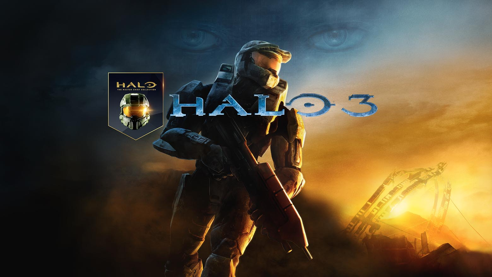
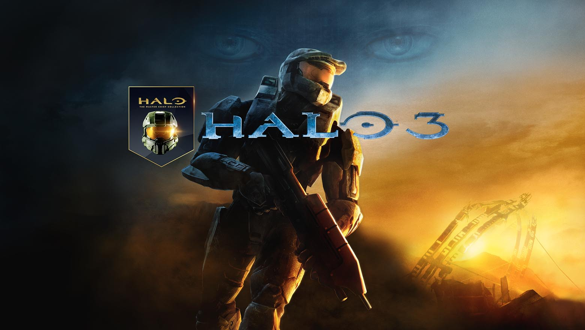

I've spent a lot of times playing video games in my life. Too much, probably. So I thought you (whoever you are) might be interested in what I think are some of the best.


This game was about two brothers, or something, that had to fight aliens to...um... get girlfriends, maybe? I don't know that anyone actually knows or cares about
what the game was about, but it was a ton of fun and one of the first games that offered cool gun upgrades for your weapons. It was also, for most of us, the first introduction to the Konami
Code. Up Up Down Down Left Right Left Right....it became a staple for most teenage boys.

Fighter games were nothing new when this one came out, but 4 person fighter games were not very common. There was something oh so satisfying about smashing your best friend's little sister's
character off of the stage map and watching it smash into the front of the screen. I was always Samus, because she's my homie (we'll get to that later), and I always hated playing against
Ness because his baseball bat was some straight garbage!

No video game list is complete without this one on it. It was most people's first intro into the quad box first-person-shooter game. I spent many a nights at sleepovers playing this game
until very early in the morning, hiding in the bathroom of the facility with the prox mines wired all the way down the hall. Screen lookers were very frowned upon.
 

Born from the Goldeneye genre, the Halo series has taken the FPS to a new level by adding something that most didn't have before: a worthwhile story. I'm a sucker for storylines and good writing
and the rest of the games on this list will reflect that. Halo 3 was the best of the series, in my opinion. It left most of us believing that Master Chief had given his life for the greater good
of humanity, and also left us all feeling all the feels for his AI helper Cortana. Spoiler alert: Cortana goes crazy in subsequent entries of the series and almost causes the end of all life herself.

Picking one Metroid entry was a tough one. The original Metroid game was the first 2D game to incorporate vertical scrolling. So it was already a game-changer (get it?) and Super Metroid
took the long upgrade-based puzzle platformer to a new level. I loved this game because it made me think about how to proceed from one section to the next but also forced me to remember
areas I'd been to but couldn't access yet because I hadn't yet upgraded to the right gear yet. The creepy soundtrack throughout also adds to the overall feeling of loneliness and haunting
horror of being on an unfamiliar alien planet. PS - if you beat this game quickly enough, you discover that the main character bounty hunter is a female....big time shocker for the early 90s.


Again, picking one Mario game is tough. But Super Mario 64 was the first 3D entry and it was a masterful maiden voyage into the world of what could be. Suddenly instead of just smashing turtles
and running in a straight line, we were having to worry about what was to our left, right, front and back! I remember thinking to myself that I could never get used to video games like this,
that it would just be too much to handle....like having a third arm....my brain just wouldn't be able to process how to make it work. But they set the bar with this one, and now it's hard to imagine
a new game coming out that ISN'T a fully open 3D world.

Most people will tell you that Final Fantasy 7 is the best of the series. They might be right, but number 10 was my first forray into Square's world of magic, mystery, and mayhem. So it will always
be my favorite of them all. It was one of the last FF games to use true turn-based battle, and I definitely prefer that. The characters are rich and complex, the story is beautiful, and the relationships
truly make you care for the outcome of all involved. The main characters go on true growth arcs, the weapons and magic actually make you feel powerful, there are plenty of side quests and mini games to
keep you busy in between major plot points, and the game is just constructed and executed really well.


The Legend of Zelda combines all of the things I love most in video games. Puzzles, upgrades, huge open space worlds, rich storylines, deep characters, and more side quests than you probably have the
attention span for. Breath of the Wild took all of these things to a different level. The world is enormous, the graphics are beautiful, the story is particularly rewarding for fans of the series, and
they even found a way to make all the old favorite parts of the series feel new again. This game is awfully close to being the best game I've ever played, but loses a few points here and there. The layout
is almost TOO open, as you can make your way into dangerous spaces before you're really prepared for it and end up frustrated and confused. The weapons don't feel very powerful, and annoyingly they implemented
a system where your weapons break and disappear after some use, which is especially annoying when using the special reward weapons. Whatever points are lost with annoyances are made up ten fold in storyline,
graphics, game complexity, and little easter egg payouts for the series' biggest fans.

Let's just get it out of the way...Batman is a badass. Much like the Zelda series, this game has it all: complex difficult puzzle, side quests, deep and rewarding storylines, a rich cast of characters that fans of the Batman franchise will
love seeing, and a gameplay style that actually makes you feel like your effectively fighting 5, 10, or 20 guys at a time just like the real caped crusader would. One of my favorite parts of this game is simply how smooth they made the fighting
mechanics, and how effortlessly the titular character moves through the battle. The battle seamlessly slides in and out of suspended animation to let you plan your next moves, but it always feels cinematic and NOT as if it's done for the benefit
of the player (which I'm sure it is). Watching the last crippling blows of the battle sequence be delivered in slow motion, from a low camera angle never stops making you feel awesome. The game brilliantly blends all out melee with blending into
the shadows to sneak around your foes. Mark Hamill (yes, Luke Skywalker) provides the voice of the Joker and offers a master class in voice acting...both in this entry, and it's predecessor "Batman: Arkham Asylum", as well as the final entry of
the trilogy "Batman: Arkham Knight". The thing I always remember when thinking of this game is how well they spelled out the co-dependant relationship of Batman and the Joker, and how they somehow made the player feel actual sorrow for such a
monster (I'll let you decide which one is the monster).


I know, I know...no surprise. Sorry, but there is a reason it is at the top or near the top of literally every list of the best video games. It was incredibly innovative when it was released in 1998 and it is still an amazing game more than 20
years later. I've replayed this game at least a dozen times and it never really feels stale. The Zelda franchise had mostly been a top-down or birdseye style game before this was released and turned the land of Hyrule into a fully three dimensional
realm. Ocarina of Time really did change the video game industry. The game was the first to use button-mapping to change what weapons and tools were available at any given time, and button-configuration is considered a standard feature in most games
these days. The developers studied under film makers to develop a system that felt like a proper view of a swordsman. Today, the over-the-shoulder view of close combat styles is standard. Not to mention, the game was about halfway completed when
the decision was made to change it from a first person perspective game into a third person perspective. So programmers had to refactor almost everything to adapt to the growing need and complexity of the game. Ocarina of Time was one of the first
games to use motion capture of real humans to design cut scenes, and one of the first to use cut scenes to not only tell the beautiful story, but render necessary graphics during playback. Brilliant, and way ahead of its time. Beyond all of that, the
game is just outright fun to play, which is the truest benchmark of a good game...being futuristic in its development is just icing on the cake.